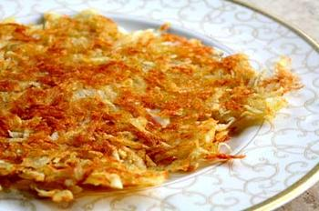
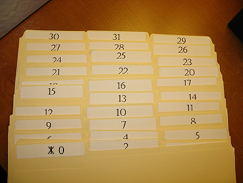

Arrays and Hashes in Ruby
Let's make some hash browns
10/24/14
Everyone likes hash browns right? I'm sorry if you don't, you're really missing out. Personally I like mine extra crispy from some greasy griddle. In this post I'm going to show you how to organize you favorite hash brown recipes to make at home. And when your home hash won't cut it, we'll keep track of your favorite diners by neighborhood. To do this we will store these lists in array's and hashes.
We're going organize this information in a way ruby can understand. To put it another way, we're going to organize our DATA (computer speak for information). And to rephrase again, we're going to structure our data (getting closer to true geek talk) - we'll be using DATA STRUCTURES.
Data structures are ways of storing information that computers can use. An array is kind of like a tickler file with numbers on the tabs. You can put stuff in the file under an index number, and then access that stuff via the index. Computers usually like to use 0 (instead of 1) as the starting point, so the first element in the array has the index 0. We can add anything to an array, strings (geek talk for words), integers (more geek talk), and other types of data. To make our hash life easier, we're going to store the ingredients in an array.
INGREDIENTS
- 3 Tbsp olive oil, canola oil, or grapeseed oil
- 1 lb Russet baking potatoes, peeled and grated>
- Salt and pepper
Let's store these three ingredients in an array
simplyrecipes_hash_brown_ingredients = ["3 Tbsp olive oil, canola oil, or grapeseed oil","1 lb Russet baking potatoes, peeled and grated","Salt and pepper"]
This code stores the ingredients I found on simplyrecipes.com in an array called simplyrecipes_hash_brown_ingredients. If we printed this array to the console this is how we'd do it and what it would look like:
puts simplyrecipes_hash_brown_ingredients
3 Tbsp olive oil, canola oil, or grapeseed oil
1 lb Russet baking potatoes, peeled and grated
Salt and pepper
Using a different array for different recipes, we can keep all our ingredients organized. If we wanted to access one of the ingredients, we would do it like this:
puts simplyrecipes_hash_brown_ingredients[1]
1 lb Russet baking potatoes, peeled and grated
See how the second ingredient is printed out? Remember that the index for the first element in arrays is 0, not 1. Clearly, this may be overkill for storing hash brown recipes. But, hopefully this helps demonstrate a way of storing data in ruby.
Let's look at another data structure, hash. It's Sunday morning, you want a some eggs, bacon, and hash browns. You've amassed a large number of favorite diners in your city, but you memory is fading. Let's make life easier and store this list in ruby. To do this, we can use a hash. A hash is kind of like an array but instead of having no control over the index number, hashes let us make our own index. The index doesn't even have to be a number. To better describe the association of data, hashes have a key and a value. We can set both of these elements.
For our list of favorite diners, we'll organize them by neighborhood. The hash will be setup like this:
favorite_diners = {
"neighborhood" (the key) => "restaurant", (the value)
}
Let's go ahead and define the hash:
favorite_diners = {
"capitol_hill" => "Ted's Bulletin",
"h_st" => "Tony's Breakfast",
"adams_morgan" => "The Diner"
}
This has is setup to use strings for both the key and value, but we could us a bunch of different types of data to store in a hash. For today, we'll just leave it at that. We can then access values in the hash just like we could do with arrays.
puts favorite_diners["adams_morgan"]
The Diner
So there you have it, using arrays and hashes for hash browns.